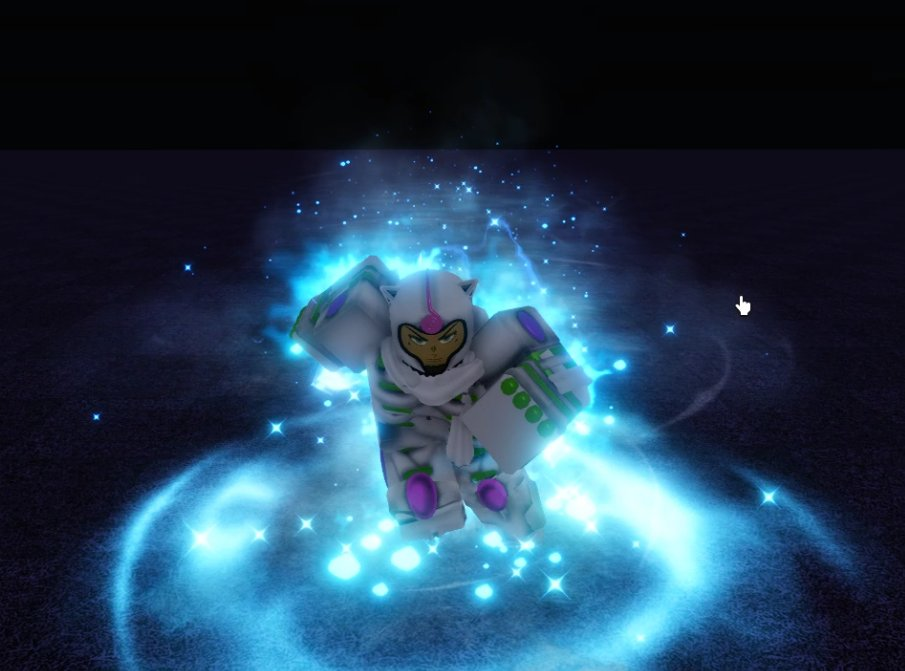
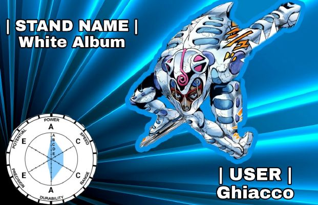

White Album
Este stand permite al usuario tener una armadura y controlar la temperatura a su alrededor, ya sea a larga o a corta distancía este stand tienes varias habilidades las cuales son muy buenas para combear gente, hasta el punto en el que puedes hacer un combo one shot solo dependiendo de tu tipo o estilo de pelea su habilidad Gently Weeps permite crear particulas congeladas a su alrededor, practicamente este seria invencible contra proyectiles


Consejos, trucos y combos (esta sección requiere una revisión después del rework)
Árbol de habilidades
No se recomienda comprar actualizaciones para Gently Weeps. La habilidad solo contrarresta duramente un puñado de stands en el juego, soportes para los cuales WA ya está bien equipado. Cuando Gently Weeps está en enfriamiento, Flash Freeze puede proporcionar cobertura y Ice Skating permite que WA mantenga la distancia contra los stands de proyectiles o los derribe.
Dado que los enemigos no usarán proyectiles mientras Gently Weeps esté activo, es mejor usarlo en la predicción o reacción a un proyectil. Algo que se hace más difícil con las actualizaciones, ya que aumentan el tiempo de reutilización de la habilidad.
Gently Weeps
Soft & Wet Moisture Plunder se desvía por completo usando Gently weeps
El Vola Barrage de Aerosmith se desvía por completo con Gently Weeps.
Si estás luchando contra un Stand que tiene múltiples proyectiles como TWAU, es mejor usar Gently Weeps para contrarrestar sus proyectiles.
Las bolas giratorias también se redireccionan hacia el usuario, ya que son proyectiles.
Mantenga Y activo tanto como sea posible, especialmente en el segmento Bridge de Steel Ball Run o luchando contra soportes o equipos de proyectiles. Incluso fuera de estas peleas, puede ser útil debido a la ralentización pasiva.
Debido a la rotación infinita pasiva, Tusk (Acto 4) NO se ve afectado por Gently Weeps. Ten cuidado cuando te enfrentes a sus proyectiles.
Flash Freeze
Flash Freeze es uno de los movimientos que caracteriza a White Album, ya que este es un movimiento de area, el cual inflinge 30 de daño, lo cual equivale a un 6.6% de la vida del oponente, si de por si sirve para finalizar un combo o
romper un combo este es un movimiento cancelable pero no puede obtener un Parry{}